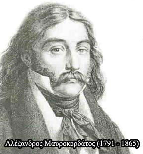

| Τα τοπικά πολιτεύματα  Με το ξέσπασμα της επανάστασης στην Πελοπόννησο και τη Στερεά Ελλάδα έγινε φανερή η ανάγκη να συσταθεί μια κεντρική κυβερνητική αρχή, με σκοπό το συντονισμό του Αγώνα καθώς και την πολιτική και διοικητική οργάνωση των απελευθερωμένων περιοχών. Για το λόγο αυτό συστάθηκαν ο Οργανισμός της Γερουσίας της Δυτικής Χέρσου Ελλάδος στο Μεσολόγγι (9 Νοεμβρίου 1821) και η Νομική Διάταξη της Ανατολικής Χέρσου Ελλάδος στα Σάλωνα (15 Νοεμβρίου 1821), με πρωτοβουλία των Αλέξανδρου Μαυροκορδάτου και Θεόδωρου Νέγρη αντίστοιχα και ο Οργανισμός της Πελοποννησιακής Γερουσίας υπό την προεδρεία του Δημητρίου Υψηλάντη (27 Δεκεμβρίου 1821). Όλοι αυτοί οι τοπικοί οργανισμοί είχαν προσωρινό χαρακτήρα «μέχρις ότου το Έθνος, […] συστήση τελειοτέραν Διοίκησιν». Καταργήθηκαν με απόφαση της Β΄ Εθνοσυνέλευσης του ¶στρους, στις 30 Μαρτίου 1823. |
||